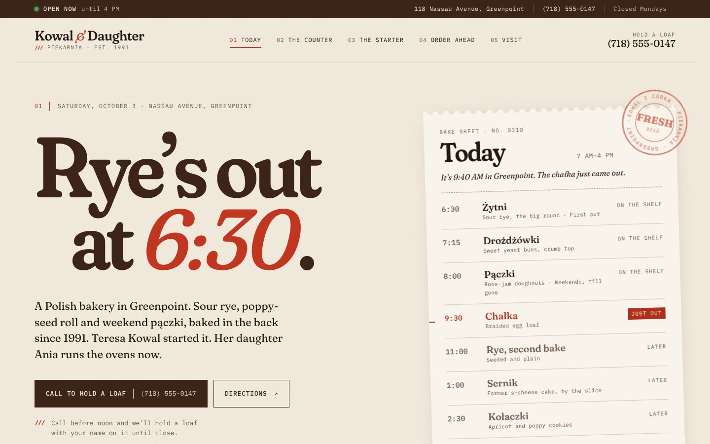
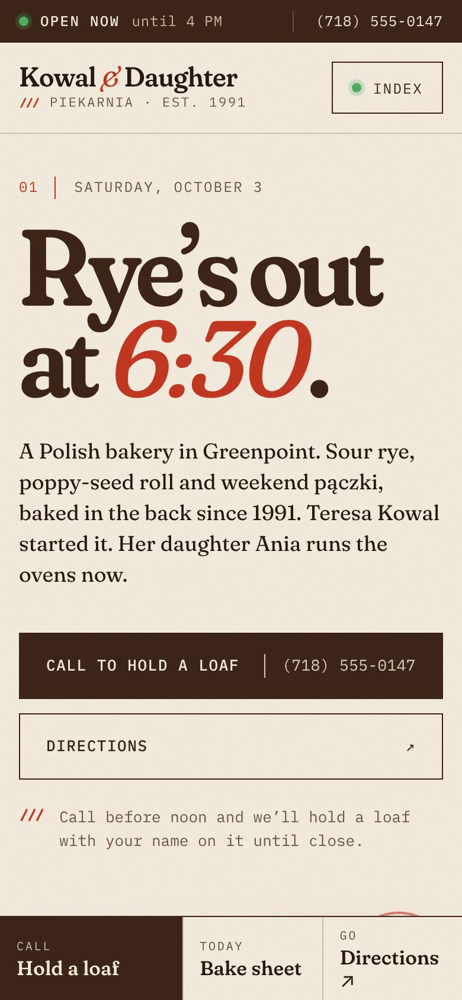
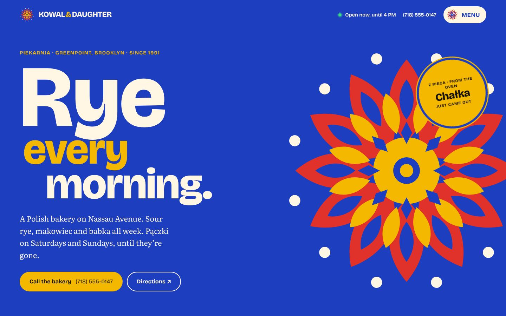
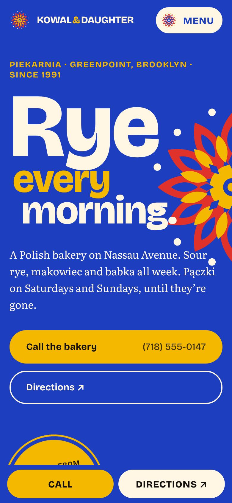

Concept 01 Recommended
Bake Sheet
The website is the bakery’s daily bake sheet. Order-slip typography, hairline rules, times in monospace, and a live paper ticket in the hero that shows what just came out of the oven.
- Personality
- Punctual, warm, unfussy, exact
- Type
- Fraunces (soft, slightly wonky serif) + IBM Plex Mono
- Colour
- Photography
- Documentary, early morning, tungsten and window light
- Signature
- Tilted ticket with a red rubber stamp; three-cut score mark
Strongest mix of usefulness and distinctiveness. It looks finished before a photo shoot, and the owner maintains it by editing a list of times.


Concept 02
Wycinanki Poster
Polish paper-cut folk art meets 1970s Polish poster design. Flat colour fields, scalloped cut-paper edges, huge grotesque type and a paper-cut rosette that turns as you scroll.
- Personality
- Joyful, proud, graphic, loud
- Type
- Bricolage Grotesque + Literata
- Colour
- Photography
- Hard-flash studio cut-outs on flat colour (or none at all)
- Signature
- Rosette, scalloped edges, holiday posters pasted on a wall
The most celebratory and the best for holiday campaigns. The risk is leaning on heritage motifs. It works without photography.


Our recommendation
Go with Bake Sheet.
Brand fit
It’s how the bakery actually works: bread comes out in waves and sells out.
Useful first
The first screen answers open, fresh and where before anyone scrolls.
Ownable
No neighbouring bakery has a live bake sheet. You’d recognise a screenshot without the logo.
Easy to run
Changing a bake time or a price is a one-line edit. No photo shoot needed to launch.